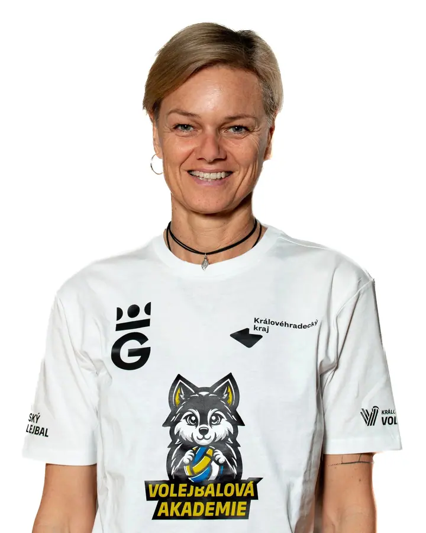
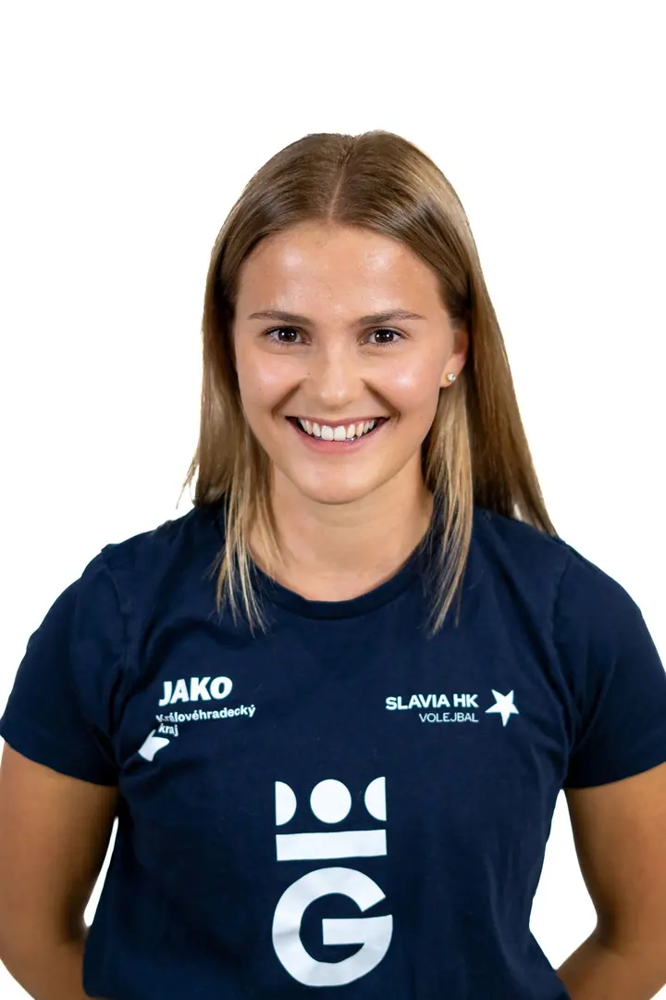

01 / 04
Sportovní reportáž
Fotím zápasy, poháry, mistrovství i tréninky, od dospělých po mládež. Chci, abyste na fotkách cítili to, co jste cítili na hřišti.
Zeptat se na termín→




Sport, jak jste ho prožili na hřišti
Zeptat se na termín →(01) Ahoj
Jmenuji se Karolína Kodymová a fotím sport v Hradci Králové a okolí. Na hřišti se všechno odehrává v okamžiku a právě ten okamžik se snažím zastavit a uchovat. Před sezonou fotím také soupisky a týmové portréty .
(02) Co fotím
01 / 04
Fotím zápasy, poháry, mistrovství i tréninky, od dospělých po mládež. Chci, abyste na fotkách cítili to, co jste cítili na hřišti.
Zeptat se na termín→02 / 04
Před sezonou fotím soupisky a týmová tabla pro kluby i mládežnické výběry. Jednotný styl, který se hodí na web klubu i do vestibulu haly.
Zeptat se na termín→03 / 04
Mužské i ženské portréty, ve kterých jde o osobitost a příběh člověka před objektivem.
Zeptat se na termín→Dále nabízím
Kromě zápasů fotím i klubové eventy a akce pro fanoušky, aby po sezoně zůstalo víc než jen výsledky.
↗(03) Portfolio
Kliknutím fotku zvětšíte · fotografie jsou ilustrační
(04) Postup
Od první zprávy po hotovou galerii.
Krok 1 z 4
Napíšete mi, o jaký sport, zápas nebo tým jde, kde a kdy se hraje. Společně si ujasníme, co od fotek potřebujete.
Krok 2 z 4
Zjistím si podmínky v hale nebo na hřišti. U soupisek a týmových fotek domluvíme pozadí, dresy a harmonogram, aby focení proběhlo rychle.
Krok 3 z 4
Na zápase nebo tréninku hledám neokoukané úhly a okamžiky, které rozhodují. Fotím s respektem k hráčům, trenérům i fanouškům.
Krok 4 z 4
Vyberu a upravím nejsilnější snímky a pošlu vám je připravené pro web, sociální sítě nebo tisk.

Okamžik, který stojí za to uchovat.
(05) Za objektivem
Jsem nadšenec pro veškerý sport a není mi cizí žádný pohyb. Mnoho sportovního vybavení u mě doma ale nehledejte. Jsem nadšená hlavně zpoza objektivu a od obrazovky počítače. Chci, aby moje fotky nebyly jen záznamem a aby v nich byla atmosféra, energie a srdce, které do sportu dáváte.
Se sportovní fotografií jsem začínala při studiu na vysoké škole v Olomouci. Stala jsem se členkou realizačního týmu a fotila univerzitní lední hokej. Tam jsem se naučila fotit s otevřenýma očima, protože dostat pukem nikdo nechce, ani do foťáku, natož do hlavy.
Dnes celou volejbalovou sezonu fotím domácí zápasy, poháry a mistrovství TJ Slavia Hradec Králové a věnuji se i mladým volejbalistům a volejbalistkám Královéhradeckého kraje. Moje fotky se objevují na webu České volejbalové federace, na portálu Salonky i v krajských a celostátních denících.
Karolína
Karolína Kodymová · Sportovní fotografka
Nejvíc volejbal, začínala jsem u ledního hokeje a ráda fotím i gymnastiku. Mám ráda veškerý sport, takže se klidně ozvěte i s jiným.
Ano. Fotím od dospělých po mládež, včetně mládežnických i veteránských mistrovství. S mladými volejbalisty jezdím i na srazy a fotím jejich tréninky.
Ano, soupisky a týmová tabla fotím pravidelně před sezonou. Hodí se na web klubu, na sociální sítě i na nástěnku ve vestibulu haly.
Hlavně v Královéhradeckém kraji, v Hradci Králové, Pecce, Jičíně a Nové Pace. Pokud se hraje jinde, napište mi a domluvíme se.
(07) Kontakt
Napište pár vět o tom, co si představujete, a termín, který se vám hodí.